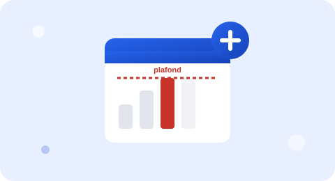

Arrêts de travail plafonnés : ce qui change depuis le 1ᵉʳ septembre 2026
Trois décrets publiés le 12 juin 2026 plafonnent pour la première fois la durée des arrêts de travail donnant lieu au versement d'indemnités journalières. Voici les nouveaux seuils, qui ils concernent, et ce qui reste possible en cas de maladie grave.
Mise à jour du 2 octobre 2026 : à partir du 15 octobre 2026, la durée maximale de versement des indemnités journalières passe de 3 ans à 1 an pour les affections de longue durée non exonérantes. Voir ce qui change au 15 octobre.
Par Nathan Penin, éditeur du site. Article vérifié le 2 septembre 2026, complété le 2 octobre 2026 (règle applicable au 15 octobre) — mis à jour à chaque évolution du texte de loi. Notre méthode.

Ce qui change, en résumé
| Type de prescription | Avant le 1ᵉʳ septembre 2026 | Depuis le 1ᵉʳ septembre 2026 |
|---|---|---|
| Arrêt initial | Aucune durée maximale fixée | 31 jours maximum |
| Renouvellement | Aucune durée maximale fixée | 62 jours maximum par renouvellement |
| Au-delà de ces seuils | — | Prolongation possible si motivée par l'état de santé (ex. maladie grave) |
Ce qui change au 15 octobre 2026 : arrêts longs en ALD non exonérante
Une deuxième mesure, distincte du plafonnement des prescriptions, s'applique à partir du 15 octobre 2026. Le décret n° 2026-866 du 16 septembre 2026, paru au Journal officiel du 18 septembre, réduit de 3 ans à 1 an la durée maximale de versement des indemnités journalières pour les salariés atteints d'une affection de longue durée (ALD) qui n'est pas prise en charge à 100 % par l'Assurance maladie, dite « ALD non exonérante » (code.travail.gouv.fr, actualité du 18 septembre 2026✓ Source officielle ; service-public.gouv.fr, actualité du 24 septembre 2026✓ Source officielle). Ici, ce n'est pas la durée de chaque prescription qui est limitée, mais la durée totale d'indemnisation.
| Votre situation | Durée maximale de versement des indemnités journalières |
|---|---|
| ALD non exonérante — arrêt prescrit à partir du 15 octobre 2026 | 1 an |
| ALD non exonérante — arrêt en cours qui atteint 6 mois après le 15 octobre 2026 | 1 an |
| ALD non exonérante — arrêt déjà en cours depuis plus de 6 mois au 15 octobre 2026 | Ancienne règle : 3 ans maximum |
| ALD exonérante (prise en charge à 100 %) | Inchangé : 3 ans maximum |
| Arrêt maladie hors ALD | Inchangé : 360 indemnités journalières sur une période de 3 ans (ameli.fr ; service-public.gouv.fr parle de 12 mois d'indemnités par période de 3 ans) |
Pour ouvrir une nouvelle période d'indemnisation d'un an au titre de la même maladie, le salarié devra avoir repris son travail pendant au moins 1 an (code.travail.gouv.fr). Sont concernés les assurés du régime général et du régime agricole, ainsi que les clercs et employés de notaire (service-public.gouv.fr).
Autre nouveauté signalée par code.travail.gouv.fr : depuis le 19 septembre 2026, un assuré peut être sanctionné s'il cherche à obtenir un arrêt de travail pour maladie qui n'est pas justifié par son état de santé, en complément des sanctions déjà prévues en cas d'abus. La page de service-public.gouv.fr ne reprend pas ce point et la nature de la sanction n'y est pas détaillée : nous ne la précisons donc pas ici.
À noter : au 2 octobre 2026, les fiches permanentes d'ameli.fr et de service-public.gouv.fr (fiche F3053) n'ont pas encore intégré cette règle et indiquent toujours 3 ans pour toute ALD. En cas de doute sur la catégorie de votre ALD ou sur la règle applicable à votre arrêt, interrogez votre caisse d'assurance maladie.
Qui est concerné par le plafonnement à 31 et 62 jours ?
Le plafonnement s'applique aux arrêts de travail des assurés du régime général et du régime agricole (salariés et non-salariés), prescrits ou renouvelés à partir du 1ᵉʳ septembre 2026. Il concerne les arrêts établis par un médecin, une sage-femme ou un chirurgien-dentiste — ces trois professions restant habilitées à prescrire un arrêt initial, le renouvellement pouvant ensuite être fait par le prescripteur initial, le médecin traitant, une sage-femme ou un chirurgien-dentiste selon les cas. Mayotte est exclue du dispositif. Un décret distinct (n° 2026-501 du 12 juin 2026) fixe par ailleurs une durée maximale de service des indemnités journalières spécifique aux arrêts consécutifs à un accident du travail ou une maladie professionnelle.
Pourquoi ce plafonnement ?
Ces trois décrets (n° 2026-498, 2026-499 et 2026-501) ont été publiés le 12 juin 2026 (Journal officiel du 13 juin 2026), en application de la loi de financement de la Sécurité sociale pour 2026, et créent notamment un nouvel article R. 162-1-7-1 du code de la sécurité sociale. Le décret n° 2026-499 fixe en particulier la durée de renouvellement à partir de laquelle le prescripteur peut saisir le service du contrôle médical de l'Assurance maladie pour avis. L'objectif affiché est d'encadrer la prescription des arrêts de travail longs, dont le coût pour l'Assurance maladie a fortement augmenté ces dernières années, tout en maintenant une possibilité de dérogation pour les situations médicales qui le justifient.
Une limite complémentaire encadre par ailleurs le recours à la téléconsultation : un arrêt initial prescrit lors d'une téléconsultation est limité à 3 jours, sauf si le prescripteur est le médecin traitant du patient ou sa sage-femme référente.
Un sujet qui fait débat
Comme d'autres mesures d'encadrement des dépenses de santé, ce plafonnement suscite des critiques : plusieurs représentants de professionnels de santé et d'associations de patients redoutent qu'il complexifie le suivi des pathologies longues (cancers, affections chroniques, suites d'accidents graves) et alourdisse la charge administrative des médecins, qui devront motiver plus souvent leurs prescriptions ou solliciter le contrôle médical. Les pouvoirs publics répondent que la dérogation reste ouverte dès lors que l'état de santé le justifie, et que l'objectif est d'harmoniser des pratiques de prescription jugées disparates, pas de réduire les droits des patients gravement malades.
Ce que ça change concrètement
Si votre arrêt de travail dépasse 31 jours (initial) ou 62 jours (renouvellement), votre médecin devra soit motiver explicitement la poursuite de l'arrêt au regard de votre état de santé, soit orienter votre dossier vers le service du contrôle médical de l'Assurance maladie. Cela ne signifie pas que votre indemnisation s'arrête automatiquement à ces seuils : la prolongation reste possible, mais elle est davantage encadrée. Pensez à demander à votre médecin de bien documenter votre dossier si votre pathologie nécessite un arrêt long.
Ce plafonnement ne change pas vos obligations de maintien de salaire ou de subrogation, mais il peut modifier le rythme auquel vous recevez les avis d'arrêt et leurs renouvellements, notamment pour les absences longues. Anticipez d'éventuels échanges plus fréquents entre le salarié, le médecin traitant et le service du contrôle médical pour les arrêts qui se prolongent au-delà des nouveaux seuils.
Questions fréquentes
Le plafonnement à 31 jours veut-il dire qu'un arrêt de travail ne peut plus durer plus d'un mois ?
Non. 31 jours est la durée maximale d'une prescription initiale et 62 jours celle d'un renouvellement, mais un arrêt peut être prolongé par plusieurs renouvellements successifs si l'état de santé le justifie. Le professionnel de santé garde la possibilité de prescrire au-delà de ces seuils, notamment en cas de maladie grave, en le motivant.
Est-ce que cela concerne aussi les arrêts liés à un accident du travail ou une maladie professionnelle ?
Oui, un décret spécifique (n° 2026-501 du 12 juin 2026) fixe également une durée maximale de service des indemnités journalières pour les arrêts consécutifs à un accident du travail ou une maladie professionnelle, en complément du plafonnement général.
Qui peut prescrire un arrêt de travail soumis à ces plafonds ?
Les médecins, sages-femmes et chirurgiens-dentistes peuvent prescrire un arrêt initial. Le renouvellement peut être fait par le prescripteur initial, le médecin traitant, une sage-femme ou un chirurgien-dentiste, selon les cas prévus par les textes.
Qu'est-ce qui change le 15 octobre 2026 pour les arrêts maladie de longue durée ?
Pour les salariés atteints d'une affection de longue durée (ALD) non exonérante, c'est-à-dire non prise en charge à 100 % par l'Assurance maladie, la durée maximale de versement des indemnités journalières passe de 3 ans à 1 an (décret n° 2026-866 du 16 septembre 2026). Rien ne change pour les ALD exonérantes, qui restent indemnisées jusqu'à 3 ans, ni pour les arrêts hors ALD.
Je suis déjà en arrêt pour une ALD non exonérante : la limite d'un an s'applique-t-elle à moi ?
Cela dépend de la durée déjà écoulée. Si vous êtes en arrêt depuis plus de 6 mois au 15 octobre 2026, vous restez soumis à l'ancienne règle (3 ans maximum). Si votre arrêt en cours atteint 6 mois après le 15 octobre 2026, ou s'il est prescrit à partir de cette date, la limite d'un an s'applique. Pour une nouvelle période d'un an au titre de la même maladie, il faudra avoir repris le travail pendant au moins 1 an.